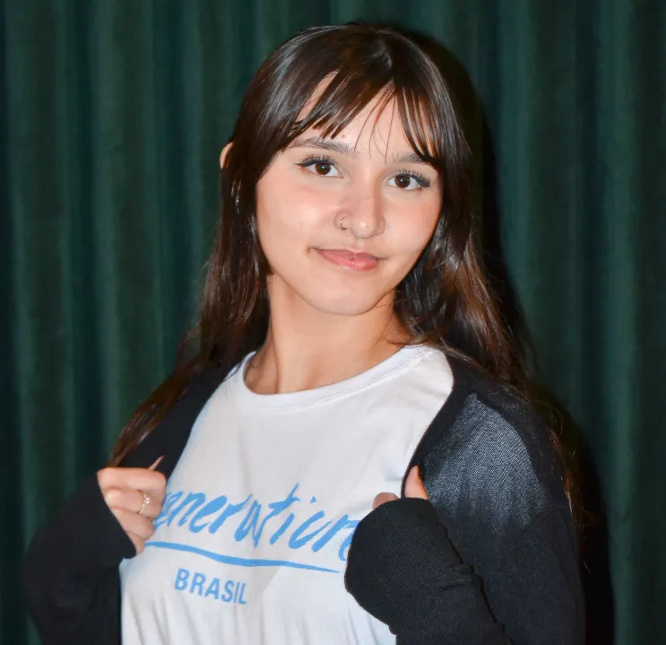

Me chamo Fernanda Silveira Veeck e nasci em 23 de setembro de 2006. Sou estudante na Generation
Brasil, integrante da 1ª turma de tecnologia do Rio Grande do Sul, e atualmente curso o 3º semestre
do Técnico em Tecnologia da Informação na Escola Técnica Estadual Mascarenhas de Moraes.
Minha jornada em Desenvolvimento de Software começou após a conclusão do ensino médio, no final de
2024, e desde então a tecnologia deixou de ser apenas um interesse para se tornar um verdadeiro
propósito profissional. O primeiro contato com programação em Java foi decisivo para essa escolha,
despertando curiosidade, entusiasmo e a certeza de que este era o caminho certo.
Impulsionada por essa curiosidade e pelo desejo constante de evolução, busquei me aprofundar ainda
mais na área, o que me levou à Generation Brasil, onde venho desenvolvendo habilidades técnicas e
comportamentais essenciais não apenas para o mercado de tecnologia, mas também para minha evolução
como pessoa e profissional. Ao longo dessa trajetória, adquiri conhecimentos em JavaScript,
TypeScript, SQL, HTML, CSS, Node.js, Nest.js e versionamento de projetos com Git, sempre com foco em
boas práticas, lógica de programação e soluções eficientes.
Acredito em aprendizado contínuo e no poder da tecnologia para transformar ideias em soluções reais.
Vamos nos conectar?